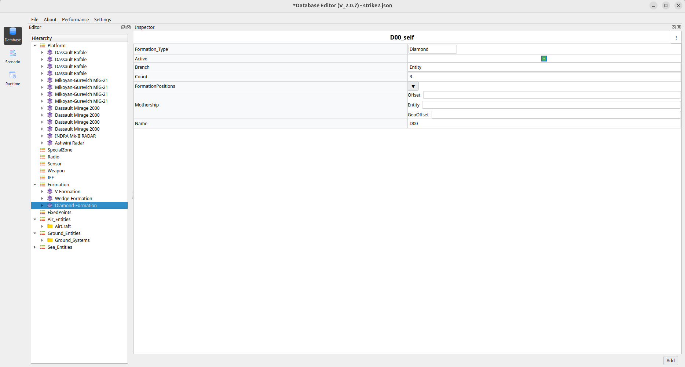
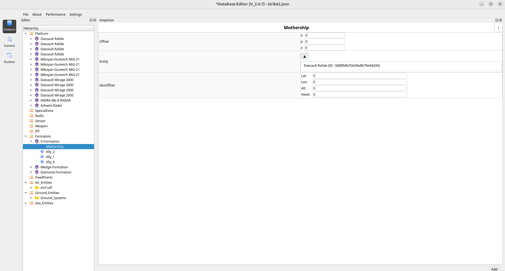

Formation Creation and Configuration Guide
This section explains how to create and configure aircraft formations using the Hierarchy and Inspector panels.
1. Add Entities
Before creating a formation, ensure that the required entities exist.
Add entities under the Platform node (for example:
Tejas,Mig,Rafale).These entities will later be assigned as Mothership (Leader) and Allies (Followers).
2. Create a Formation
In the Hierarchy panel, right-click on Formation.
Select Add Formation.
A new formation (for example:
V-Formation) will appear under the Formation node.
3. Configure Formation
Click the newly created Formation.
In the Inspector panel, configure the required fields.
Required Fields
Count
Enter the number of followers (Allies) required in the formation.
Example:
2→ createsAlly_0andAlly_1.
Formation Type
Select the desired formation type (for example:
V).
Once Count and Formation Type are set, the system automatically creates:
MothershipAlly_0,Ally_1, …Ally_N
These objects appear under the formation node in the Hierarchy panel.
{kind=link}

4. Assign Mothership (Leader)
Click Mothership under the formation.
In the Inspector panel:
Locate the Entity field.
Drag an entity from the Platform section.
Drop it into the Entity field.
The selected entity now becomes the leader of the formation.
5. Assign Allies (Followers)
Click
Ally_0,Ally_1, and so on, one by one.For each ally:
Drag an entity from the Platform section.
Drop it into the Entity field in the Inspector panel.
Each ally follows the mothership according to the selected formation type.
{kind=link}
